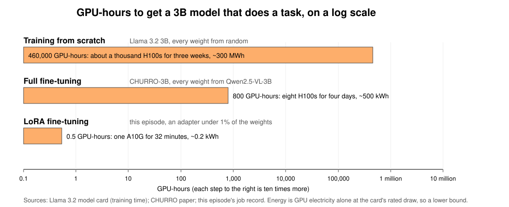

Fine-tuning a Vision-Language Model with Training Jobs
Last updated on 2026-10-27 | Edit this page
Estimated time: 180 minutes
Overview
Questions
- When is fine-tuning worth it?
- What does a fine-tuning run cost, and how do I estimate that before launching it?
- How do I fine-tune a model as a SageMaker training job?
- How do I tell whether the fine-tune helped?
Objectives
- Explain what drives the cost of a fine-tuning run (model size × tokens × epochs × number of attempts), and what to do before launching one at any size: set a time cap, run a small slice first, write the estimate down, and checkpoint.
- Launch a LoRA fine-tune of a 3B vision-language model (CHURRO-3B) as
a
HuggingFacetraining job on a single 24 GB GPU, with tags, a unique job name and amax_runcap. - Read a job’s billable time and compare it to the estimate.
- Compare the base model and the fine-tuned model on held-out pages using the competition’s own character error rate (CER).
- Know how to scale the same job up to the full dataset (homework) and to multi-GPU instances for larger models.
Open the notebook from:
/ML_with_AWS_SageMaker/notebooks/08_Finetuning-BadgerScribe.ipynb.
Select the conda_pytorch kernel.
Why fine-tune an LLM
The training episodes so far trained small models from scratch. This episode fine-tunes a large language model with LoRA, the cheap form of fine-tuning explained below: a vision-language model with billions of parameters, pretrained on more data and compute than any lab could repeat. That is what makes it a different kind of job, in what it can do and in what it costs.
General-purpose models are trained on the average of the internet, and research problems are rarely average. A 19th-century German hand, a lab’s own annotation conventions, species names, a regional dialect, the layout of a specific archive: the largest commercial model has seen little of it, and no prompt can make up for that.
Done on the right data, a small fine-tuned model beats a much larger general one. The model we LoRA fine-tune in this episode is itself the example: CHURRO, a 3-billion-parameter vision-language model, was fully fine-tuned from Qwen2.5-VL-3B on about 100,000 pages of historical documents, and its authors report that it exceeds the accuracy of Gemini 2.5 Pro on historical text recognition at 15.5x lower cost (paper). A model that size also runs on one GPU you control, which matters when the data cannot leave your institution, when results have to be reproducible with fixed weights, and when the job is a million pages rather than a demo. CHURRO is not a one-off: the same pattern shows up wherever a research task has its own data.

Sources: CHURRO, EMNLP 2025; Goedel-Prover-V2, ICLR 2026; MedGemma technical report, 2025. Scores are as reported by each model’s authors.
What fine-tuning is
Fine-tuning is ordinary training that starts from a trained model instead of random weights. You show the model your examples, it computes how wrong its output was, and gradient descent nudges the weights toward your data. Because the model already knows how to read, write and look at images, it needs hundreds of examples to learn your task where training from scratch would need millions. Everything it learned before stays in the weights; you are adjusting them, not replacing them.
Where a model’s weights come from sets the bill. Training from scratch, the step that makes a foundation model like the ones behind ChatGPT, sets every weight from random on trillions of tokens, on thousands of GPUs for months, which is why a handful of companies do it: Qwen2.5, the family CHURRO descends from, was trained on 18 trillion tokens (technical report), and Meta reports about 31 million GPU-hours for Llama 3.1 405B (model card). Fine-tuning starts from those weights and needs a sliver of that data, but updating every weight of a model with billions of them is still a multi-GPU job for hours or days: CHURRO itself took on the order of 800 H100-hours. LoRA fine-tuning freezes the weights and trains a small adapter beside them, which brings the same kind of adaptation down to one GPU and minutes to hours; this episode’s run is 251 pages, half an hour and under a dollar. On one axis the three are six orders of magnitude apart, and the electricity follows the GPU-hours: the training run draws what thirty homes use in a year, the full fine-tune what one home uses in a couple of weeks, the LoRA run what a laptop uses in half a day. The rest of this section says what the difference between the last two is made of.

Full fine-tuning is expensive
Training every weight means storing four numbers per weight instead
of one. There is the weight itself, and its gradient, which says which
way to nudge it this step. Then there is what the optimizer remembers:
Adam, the optimizer everyone uses, keeps for every weight a running
average of its recent gradients and a running average of their squares,
so that it can give each weight its own step size. And the weight has to
be kept in 32-bit as well as 16-bit, because each step’s nudge is far
smaller than a 16-bit number can hold; applied to a 16-bit weight it
would round away to nothing. Two bytes for the working weight, two for
the gradient, four for the 32-bit weight and eight for Adam’s two
averages: 16 bytes per parameter, against 2 for inference. A 3B model
that runs in 6 GB needs 48 GB to fully fine-tune; a 7B model needs 112
GB, which is already a four-GPU instance at $13 an
hour, and the bill scales with every epoch and every retry.
Do not fully fine-tune anything in this workshop (that is,
update all the weights), and do not LoRA fine-tune a model larger than
7B on the class account. A 7B LoRA needs about 22 GB, which is
the most the 24 GB GPU the class uses will hold; anything larger needs
the 48 GB instance, and above about 17B no instance the account allows
holds the model at all. On a few hundred examples a 7B LoRA run is still
a few dollars, so retries are cheap. A full fine-tune of a 7B model
needs 112 GB, more than any instance the class account allows, and would
be about $140 per run on one that did; a
70B model is $6,000 to $12,000 per
run, and a hyperparameter sweep multiplies that by ten. Those
runs exist in this episode only as estimates, so that you can recognise
one before you launch it.
LoRA
LoRA (low-rank adaptation) freezes the pretrained
weights and trains tens of millions of extra parameters in small
matrices bolted onto the attention and MLP layers. For each large weight
matrix W (d × d), it adds two thin ones, B (d
× r) and A (r × d), with a rank r of 8 to 64;
the layer computes W·x + B·A·x, and only A and
B get gradients.

The frozen weights can stay in 16-bit, since nothing updates them, and the gradients and optimizer state only exist for the adapter. The adapter is about 100 MB, trains on a single 24 GB GPU for a 3B model, and recovers most of the gain of a full fine-tune for a task like this: the model still learns your hands and your conventions, it just learns them through the adapter. This episode uses LoRA.
Scale, and how easy it is to get wrong
What makes fine-tuning an LLM different is scale. The training
episodes ran for minutes on a $0.12-an-hour CPU; a full
fine-tune runs for hours or days on a GPU, a LoRA fine-tune for minutes
to hours, and every setting multiplies the bill: model size, epochs,
image resolution, instance type, and whether anyone is watching when the
job should have ended. Any one of them off by 10x is a 10x bill, and the
first run is never the last. This episode spends as long on estimating
and capping the run as on running it. We measure the gain ourselves: the
episode ends by scoring the base model and the LoRA fine-tuned model on
the same held-out pages.
The data: Badger Scribe
Badger Scribe is a Kaggle challenge built from UW Digital Collections material: 19th-century surveyors’ field notebooks, craftsmen’s account books, and German immigrant letters in Kurrent script. Given a page image, produce a verbatim transcription. The score is character error rate (CER): edits per reference character, lower is better.
This lesson uses the German letters, the Anna Seifert correspondence
held by the Max Kade Institute: 191 letters and postcards written
between 1932 and 1942 by one woman to her son in Kurrent (the old German
handwriting taught in schools until the 1940s, whose letterforms look
nothing like today’s cursive: an e is two short strokes, an
s can take three shapes, and most Germans alive today
cannot read it), transcribed by the Institute’s Kurrent Transcription
Group. It is the part of the competition data where every label was
produced by a person, and it is most of the hidden test set.
| split | pages | documents | label source |
|---|---|---|---|
| train | 295 | 4 letter bundles | all human-transcribed, ~620 characters per page |
| test | 141 | 5 other letter bundles | labels held by Kaggle |
295 labelled pages is a realistic amount of data for a library or a lab to have, and it is enough to move a model that was pre-trained on the right kind of material. Kurrent is also a genuinely different script, not a style of the one the model already reads, so this is a case where the model has to learn something new.
We LoRA fine-tune CHURRO-3B. It already reads old handwriting across 46 language clusters; we are teaching it these hands and these transcription conventions.
Step 0: Estimate the cost before you launch anything
Before launching a fine-tune, write down what it should cost. If the bill comes in at three times your number, something is wrong, and you want to find that out on the first run, not the fiftieth.
What fine-tuning costs, from one dollar to ten thousand
The cost of a run is GPU-hours times the hourly rate. GPU-hours grow
with the model size, with how many tokens the model sees (examples,
times tokens per example, times passes over the data), and with how many
runs you make before one works. Our class run sits at the bottom of that
range. The table uses SageMaker on-demand prices in
us-east-1 from October 2026:
| Run | GPUs | Instances rented (price per instance-hour) | Hours | GPU-hours | Cost = instance-hours × price |
|---|---|---|---|---|---|
| This episode: 3B LoRA, all 251 Kurrent training pages, 2 passes, 0.8M tokens seen | 1 × A10G | 1 × ml.g5.xlarge ($1.41) |
0.53 | 0.53 | $0.75 |
| Homework: the same pages, 4 passes, 40 pages scored, 1.6M tokens | 1 × A10G | 1 × ml.g5.xlarge ($1.41) |
1.1 | 1.1 | ~$1.50
|
| Badger Scribe teams: 3B LoRA, the whole train set (619 pages, all three categories), 2 passes, 2M tokens | 1 × A10G | 1 × ml.g5.xlarge ($1.41) |
0.85 | 0.85 | ~$1.20
|
| 7B full fine-tune, 50,000 documents, 300M tokens (the challenge below) | 8 × A100 | 1 × ml.p4d.24xlarge ($25.25) |
5.5 | 44 | ~$140 |
| 70B LoRA, one day | 8 × A100 | 1 × ml.p4d.24xlarge ($25.25) |
24 | 192 | ~$600 |
| CHURRO-3B’s own training: full fine-tune, 100,000 pages | 32 × H100 | 4 × ml.p5.48xlarge ($63.30) |
25 | 800 | ~$6,300 |
| 70B full fine-tune, two days | 32 × H100 | 4 × ml.p5.48xlarge ($63.30) |
48 | 1,536 | ~$12,000 |
| Any row above, repeated in a 10-run hyperparameter sweep | × 10 |
The class row is measured (2026-10-21: 31.7 billed minutes,
$0.75). The homework and team rows take that run’s seconds
per page and apply them to more passes and more pages. The 7B row is
worked out in the challenge below, the 70B rows are order-of-magnitude
figures, and the CHURRO row comes from a published review of the
paper.
The number of passes is a choice. Two passes for the class run is a
budget decision for a 33-minute job, not advice: large
instruction-tuning corpora usually get one to three passes, and a few
hundred examples usually get three to five. Each extra pass adds the
same amount again, so ten passes over the whole train set is about
$5, and a sweep multiplies whatever you end up with by ten.
Step 2 shows how to read the per-pass curve and decide.
GPUs come in fixed boxes. An ml.g5.xlarge is one A10G,
an ml.p4d.24xlarge is eight A100s, an
ml.p5.48xlarge is eight H100s, and you rent whole boxes.
“32 H100s for 25 hours” is four ml.p5.48xlarge for 25
hours: 100 instance-hours at $63.30, $6,330.
The time rule below produces GPU-hours; divide by the GPUs in the box
for instance-hours, and multiply by the box’s price for the bill.

The CHURRO bar is the model you are about to fine-tune: Stanford
spent on the order of 800 H100-hours making it, and you get the benefit
for a dollar because you are adapting it rather than retraining it.
Starting from a model that already knows most of your task is the
biggest saving available, and it is decided before any GPU is involved.
The sweep extension is the one that surprises research groups: a first
run is rarely the last, so a “$140 full fine-tune” is
usually a $700 to $1,400 project.
This episode’s run costs a dollar. The same steps on a
$140 run, or a $6,000 one, are where a
forgotten max_run or a wrong instance type costs a grant
line, which is why the episode does them on a dollar first.
Back of the envelope: will it fit, and how long will it take?
Two rules of thumb answer most of the question before you touch a
console. They are good to within a factor of two, which is enough to
tell a $5 run from a $500 one.
Rule 1, memory: will it fit on the GPU? Every parameter in the model takes up GPU memory, and how much depends on what you are doing with it. Running the model needs only the weight. A LoRA fine-tune keeps the weights frozen in 16-bit and adds a small adapter with its own gradients and optimizer state. A full fine-tune needs the weight, its gradient, a 32-bit copy of the weight, and the two running averages Adam keeps for it: the four numbers per weight from the Full fine-tuning is expensive section above. The figure and the first table give the bytes per parameter for each case.

| What you are doing with the model | Bytes per parameter | What has to be in memory for each parameter |
|---|---|---|
| Inference, 4-bit weights | 0.5 | the weight, quantized |
| Inference, FP8 | 1 | the weight, quantized |
| Inference, bf16 | 2 | the weight |
| LoRA fine-tune | ~2.5 | the frozen 16-bit weight, plus a share of the adapter with its gradients and optimizer state |
| Full fine-tune, mixed precision | 16 | the 16-bit weight (2), its gradient (2), a 32-bit copy of the weight (4), Adam’s two running averages (8) |
Multiply the bytes per parameter by the parameter count, add about 4 GB for activations (more for long sequences or big batches), and you have the GPU memory the job needs. The second table does that for four model sizes and names the smallest SageMaker box that holds each one, from the price list in the Which instance to rent section below:
| Model | Inference, bf16 | LoRA fine-tune | Full fine-tune |
|---|---|---|---|
| 3B | 6 GB: ml.g5.xlarge, 1 × 24 GB,
$1.41/h |
12 GB: ml.g5.xlarge
|
52 GB: ml.g5.12xlarge, 4 × 24 GB,
$7.09/h |
| 7B | 14 GB: ml.g5.xlarge
|
22 GB: ml.g5.xlarge, with nothing to spare |
116 GB: ml.g6e.12xlarge, 4 × 48 GB,
$13.12/h |
| 27B | 54 GB: ml.g5.12xlarge, 4 × 24 GB,
$7.09/h |
72 GB: ml.g5.12xlarge
|
436 GB: ml.p5.48xlarge, 8 × 80 GB,
$63.30/h |
| 70B | 140 GB: ml.g6e.12xlarge, 4 × 48 GB,
$13.12/h |
179 GB: ml.g6e.12xlarge
|
1,124 GB: two ml.p5.48xlarge, $127/h |
Read it across a row. A 7B model you can run on one 24 GB GPU needs
116 GB to fully fine-tune, which is a four-GPU box at $13
an hour with the model sharded across the GPUs. The jump is the one from
the inference rows to the training rows in the first table: training
cannot run on quantized weights the way inference can, because each
step’s update is too small for 8-bit or 4-bit numbers to hold. LoRA
avoids the jump by freezing the model and training a few million adapter
parameters, which is why this episode fits on one 24 GB card.
Rule 2, time: how many GPU-hours? The unit is the floating-point operation, one multiply or add. FLOPs is a count of them; FLOPS, capital S, is a rate, operations per second, and is how a GPU’s speed is quoted. Training on one token costs three matrix products per layer, each one multiply and one add per weight, so 2 FLOPs per weight per product. A full fine-tune does all three; LoRA skips the weight update for the frozen base.

tokens = examples × tokens per example × passes over the data
FLOPs = 6 × parameters × tokens (4 × for LoRA)
GPU-seconds = FLOPs ÷ (GPU peak FLOPS × 0.25) a training job reaches about a quarter of the peak on the data sheetPeak FLOPS is on the GPU’s data sheet: about 70 trillion per second for an A10G, 312 for an A100, 989 for an H100. Cost is GPU-hours times the hourly rate, plus startup, which the helper assumes is 10 minutes a job (measured: about 5).
For the class run: 251 pages × 1,600 tokens × 2 passes = 803,000 tokens. LoRA on 3.75B parameters: 4 × 3.75e9 × 8.03e5 ≈ 1.2e16 FLOPs. A quarter of an A10G’s 70 TFLOPS is 17 TFLOPS, so about 700 seconds, call it 12 minutes. Measured, the same instance trains at 1.45 seconds per page-pass, so 502 page-passes take about 12 minutes. The rule lands on the number.
Estimating the class run with
helpers.estimate_finetune_cost
helpers.estimate_finetune_cost does the same two
calculations for any model and any data, picks the cheapest instance
that fits (or uses the one you name), and prints the memory needed, the
GPU-hours, the cost per run and per project, and a max_run
to set. Its inputs are the quantities in the rules above, so it is worth
being precise about them, with the class run as the example:
-
params_billions: every parameter the model holds, including parts you are not training. CHURRO is a 3B language model plus a vision tower, 3.75B in all. -
examples: one example is one training item, whatever the model is given one at a time: here one page image with its transcription, and there are 251 of them. For a text model it would be one document; for a speech model, one recording. -
tokens_per_example: how many tokens the model sees for one of those items. Tokens, not words, because the model never sees words. English text is about 1.3 tokens per word, more for German and for old spellings. An image on a Qwen-VL style model becomes one token per 28 × 28 pixel block after resizing, about 1,300 for a megapixel. For a page here that is about 1,300 for the image plus about 300 for the transcription, 1,600; the Setup section counts it with the model’s own processor rather than guessing. -
epochs: passes over the data. The three numbers multiply to the tokens the model sees: 251 × 1,600 × 2, about 800,000. If you know the total tokens and not the breakdown, put the total inexamplesand 1 intokens_per_example; the arithmetic is the same. -
method:"lora"or"full", which sets the bytes per parameter and the FLOPs per token. -
instance_type: one of the boxes in the price list; leave it out and the cheapest one that fits is chosen. -
runs: how many times you expect to run it. A first run is never the last; five to ten is realistic for a project before any sweep.
PYTHON
import sys
sys.path.insert(0, "/home/ec2-user/SageMaker/ML_with_AWS_SageMaker/scripts")
import helpers
step0_estimate = helpers.estimate_finetune_cost(
params_billions=3.75, # CHURRO-3B: the 3B language model plus its vision tower
examples=251, # one example = one page image with its transcription
tokens_per_example=1600, # ~1,300 image tokens + ~300 text tokens; counted in Setup below
epochs=2, # passes over the 251 pages
method="lora",
instance_type="ml.g5.xlarge",
)It says about 27 minutes and $0.64: 17 minutes of
training plus the 10 minutes of startup it assumes. The 17 is more than
the 12 of the hand calculation above because the estimator multiplies
the FLOPs by 1.5 when gradient checkpointing is on, as it is in our
script: to save memory, the forward pass is thrown away and recomputed
during the backward pass, which is half the arithmetic again. Measured,
the job’s log says training finished in 16.7 min, and that
includes the two end-of-pass scorings of 8 pages, 4.6 minutes; the 126
optimizer steps themselves, at under 6 seconds each, are about 12
minutes, so the rule without the factor landed on the number and the
rule with it is a third high: the quarter-of-peak utilization is the
loosest assumption in the rule, and a miss of that size is what it is
good for. That is every assumption in it: bytes per parameter from the
first table plus 4 GB of activations for memory; 6 or 4 FLOPs per
parameter per token, times 1.5 for checkpointing, at a quarter of the
GPU’s peak for time; 10 minutes of startup; and the price list for the
bill. The job you launch in Step 1 will bill about 32 minutes, and the
difference is not an error in the rule. The job also scores holdout
pages with the base model before training and with the adapter after it,
which is about 14 minutes of GPU time the estimator knows nothing about,
because it estimates training. Hold on to step0_estimate;
Step 2 compares it to the job’s own bill.
The same call for the kind of run a marathon team might weigh, a 7B model on 5,000 documents of about 600 words (800 tokens) each, three passes, with the eight attempts a project takes:
PYTHON
helpers.estimate_finetune_cost(
params_billions=7, examples=5000, tokens_per_example=800, epochs=3,
method="lora", runs=8, # no instance_type: the cheapest that fits
);Batch size is not an input, and does not need to be. It changes two
things the estimator already has knobs for: a bigger batch keeps the GPU
busier, which is the utilization argument (0.25 by default;
a well-fed GPU reaches 0.35 or so), and it needs more memory for
activations, which is activations_gb.
More GPUs do not make it cheaper. GPU-hours are the cost; spreading them across eight GPUs shortens the wall-clock time and leaves the bill alone, and only shortens it when the job is big enough to keep all eight busy. You add GPUs when the memory table says one GPU cannot hold the job, not to save money.
Estimate a run you have not launched
A lab wants to fully fine-tune a 7B model on 50,000
documents for 3 epochs. Each document is about 2,000 tokens (roughly
1,500 words), so one pass is 100 million tokens and three passes are 300
million. They are choosing between ml.p4d.24xlarge (8 ×
A100 40 GB, $25.25/h, about 312 TFLOPS bf16 per GPU) and a
single ml.g5.xlarge; the supplemental Instances
for ML page has both, with what each box holds and how its price
covers all of its GPUs. Using the two rules: does it fit on the g5? How
many GPU-hours on the p4d, and what does one run cost? What does a
project cost?
It does not fit on the g5: a full fine-tune of a 7B model needs about 112 GB plus activations, and the g5 has 24 GB. On the p4d, 8 × 40 GB = 320 GB holds it with the model sharded across the GPUs.
Tokens: 50,000 × 2,000 × 3 = 3 × 10^8. FLOPs: 6 × 7 × 10^9 × 3 × 10^8
≈ 1.26 × 10^19. A quarter of an A100’s 312 TFLOPS is 78 TFLOPS: 1.26 ×
10^19 / 7.8 × 10^13 ≈ 1.6 × 10^5 GPU-seconds ≈ 45 GPU-hours, about 6
hours of wall-clock on 8 GPUs, about $140 for one run (the
“7B full fine-tune” row in the table above). The estimator gives the
same answer:
PYTHON
helpers.estimate_finetune_cost(params_billions=7, examples=50_000, tokens_per_example=2000, epochs=3,
method="full", instance_type="ml.p4d.24xlarge",
gradient_checkpointing=False, runs=10);A project is not one run. The first run finds a data bug, the second
a bad learning rate, then two or three are compared, then the one that
worked is rerun on the final data: five to ten runs, $700
to $1,400, before anyone touches a hyperparameter sweep.
That is the number for the proposal. The cap, the small first run, the
written estimate and the checkpoints are the same at this size; the bill
for skipping them is not.
Which instance to rent
The model we LoRA fine-tune fits on one 24 GB GPU. Here are the single-GPU and multi-GPU SageMaker training instances from the same price list; the full table, with CPU instances and notes on each GPU, is on the supplemental Instances for ML page:
| Instance | GPU | GPU memory |
$/hour |
|---|---|---|---|
ml.g4dn.xlarge |
1 × T4 | 16 GB | $0.74 |
ml.g6.xlarge |
1 × L4 | 24 GB | $1.13 |
ml.g5.xlarge |
1 × A10G | 24 GB | $1.41 |
ml.g6e.xlarge |
1 × L40S | 48 GB | $2.61 |
ml.g5.12xlarge |
4 × A10G | 96 GB | $7.09 |
ml.p4d.24xlarge |
8 × A100 | 320 GB | $25.25 |
ml.p5.48xlarge |
8 × H100 | 640 GB | $63.30 |
Multi-GPU instances are for jobs that do not fit on one GPU: a full
fine-tune of a 7B model, or anything at 70B. For a job that does fit,
they are the wrong tool, because the price goes up 5x to 45x and a job
too small to split gets no faster. A 3B LoRA run fits with room to
spare, so ml.g5.xlarge is the workhorse for this episode. A
T4 is too small and too slow for a 3B vision model with page-sized
images; ml.g6.xlarge is a fine substitute if g5 capacity is
short; ml.g6e.xlarge is roughly 2 to 3x faster for less
than twice the price, so it becomes cheaper per run once training
outweighs the fixed startup (Exercise 2).
Scaling the same job to more GPUs
The training script uses Hugging Face Trainer, which
runs data-parallel across every GPU of a multi-GPU instance when the
estimator sets
distribution={"torch_distributed": {"enabled": True}}; the
PyTorch episode’s table of setups per kind of job has the details,
including sharding the model with fsdp= when it does not
fit one GPU. Do not launch a multi-GPU job on the class
account.
The PyTorch episode’s rule for when data parallelism pays, a big
model, a big batch and a fast link, has a LoRA-specific twist. What the
GPUs exchange after every step is the gradient, 4 bytes per
trainable parameter, and in a LoRA run that is the adapter
alone, under 1% of the model. The exchange that made two machines
pointless for a full 7B fine-tune is cheap here, so a LoRA run splits
well even over slow links.
helpers.estimate_parallel_speedup takes
method="lora" for this; the class run on a four-GPU box, as
an estimate only:
PYTHON
# The class run on a 4 × A10G instance: the gradient exchanged is the adapter's, not the model's.
# An estimate, not a launch: a 12-minute job does not need four GPUs, and the box costs 5x the single one.
helpers.estimate_parallel_speedup(params_billions=3.75, tokens_per_step=4 * 1600, instance_type="ml.g5.12xlarge", method="lora");Near 4x on 4 GPUs at about the same total cost, which is the case for a multi-GPU box: a LoRA run on the full Badger Scribe train set, or on a million pages, that has to finish by a deadline. It is not a reason to rent one for a run that finishes in twelve minutes.
The cost controls do not change with size, but the stakes
do. An ml.p4d.24xlarge bills
$25.25 an hour and an
ml.p5.48xlarge $63.30 an hour
from the moment the job starts, and a max_run of six hours
is a $150 to $380 ceiling on
a single launch. Estimate GPU-hours from the Step 0 rules, set
max_run to about twice that estimate, tag the job, and run
a slice of the data on one GPU first so that a bug costs a dollar rather
than a few hundred. Do not launch a multi-GPU job on the class
account.
What the class run costs, phase by phase
A training job bills from the moment its instance is ready until the job ends, including the minutes spent pulling the container and downloading data and model weights. In class we train on all 251 German-letter training pages for 2 passes and score 15 held-out pages before and after, all inside one job:
| Phase | Time | Cost |
|---|---|---|
| Waiting for the instance (not billed) | ~1 min | $0 |
| Startup: container pull, ~130 MB of images, 7.5 GB of model weights, model load | ~5 min | $0.12 |
| Score 15 holdout pages with the base model, ~21 s each | ~5 min | $0.12 |
| Training: 251 pages × 2 passes, ~1.5 s per page-pass with gradient checkpointing | ~12 min | $0.28 |
| Score 8 of the holdout pages at the end of each pass, ~17 s each, for the curve | ~5 min | $0.11 |
| Score the same 15 pages with the LoRA fine-tuned model, ~17 s each | ~4 min | $0.10 |
| Save and upload the adapter | ~1 min | $0.02 |
| One run | ~33 min wall-clock, ~32 min billed | $0.75 |
Every row is measured, from this job as run on 2026-10-21: 32.5
minutes from launch to finish, 31.7 billed, $0.75. Scoring
a page takes 17 to 21 seconds, not the 10 a first guess might assume, so
the two 15-page evaluations and the curve points are 14 of the 32
minutes: nearly half the bill goes to measuring rather than
training.
Training time grows linearly with pages × epochs, and roughly
linearly with image resolution (every 28 × 28 pixel block of the page
becomes one token in the model’s sequence). Doubling
max_pixels doubles the time; doubling epochs doubles it
again. Those two settings, left at careless values, are why the estimate
gets written down before the first run and compared to the
BillableTimeInSeconds the job reports after it.
We set max_run to about twice the estimate. If a run
goes past that, SageMaker kills it and we lose at most a dollar, not a
weekend.
What the whole episode costs
| What | Instance | Time | Cost |
|---|---|---|---|
| Controller notebook (no GPU needed) | ml.t3.medium |
3 h | $0.15 |
| LoRA fine-tune on all 251 pages, 2 passes, with before/after scoring and a per-pass curve | ml.g5.xlarge |
~33 min | $0.75 |
| Exercise 1: same job at 2 megapixels | ml.g5.xlarge |
~60 min | $1.40 |
| Total | ~$2.30 |
Compare the classic mistake: doing all of this interactively on a
ml.g5.xlarge notebook instance. The class itself
costs about the same, but a notebook instance keeps billing after you
close the tab. Forgotten over a weekend: $90. Forgotten for
a month: $1,029. A training job ends.
Before any fine-tuning run
- Set
max_runon every job, and stop any notebook GPU instance when you stand up. - Make the first launch of a training script a small one: a slice of the data and a short cap. The in-class run below is that small run; the homework scales it up after it has been seen to work.
- Write the cost estimate down before launching. Afterwards, read
BillableTimeInSecondsfrom the job description and compare. - Save checkpoints to S3 as the job runs, so a killed or crashed run costs one epoch, not the whole bill.
Setup
Students never download the data themselves; four things have to be in place before the session. Each is written out in the instructor pages.
-
Stage the data in the shared read-only bucket from
the lesson’s data release (
badger-scribe-data-v1, ~130 MB): a few minutes from CloudShell, a laptop or a notebook instance; commands and the read-only bucket policy in Shared data bucket: staging before each term (the same bucket holds the WattBot data for the RAG episodes). The bucket must survive the end-of-workshop cleanup, or be recreated from the release next term. -
Stage the base model in the same bucket
(
badger-scribe/model/churro-3B/, ~7.5 GB, once, from a laptop or notebook instance, not CloudShell). Every job reads the weights from S3 as amodelchannel instead of 100 students pulling 7.5 GB each from Hugging Face in the same minute. -
Quotas:
ml.g5.xlarge for training job usageat least the class size (request 100). Default is often 0 to 4 and increases take days; file three to four weeks ahead. Full list in Account preparation checklist. -
Keep the bucket name
ml-marathon-shared; the episodes have it filled in. If you stage under another name, tell students to changeshared_bucketin the first code cell.
Fallback instance if g5 capacity is short: ml.g6.xlarge
(L4, 24 GB, $1.13/h on the Instances
for ML page).
This episode runs from a CPU notebook instance
(ml.t3.medium or ml.m5.xlarge). The notebook
is only a controller: it stages data, launches jobs, and reads results.
The GPU lives in the job.
There is no data upload in this episode. The competition data is published as a release on the lesson repository (three zip files: labels, train images, test images), and your instructor has staged it in a shared read-only bucket:
-
s3://<shared-bucket>/badger-scribe/train.csv,test.csv,metadata.csv,metric.py,sample_submission.csv,transcription_conventions.md -
s3://<shared-bucket>/badger-scribe/images/<page_id>.jpg: train and test pages together, about 130 MB -
s3://<shared-bucket>/badger-scribe/model/churro-3B/: a copy of the CHURRO-3B weights (~7.5 GB), so that jobs read them from S3 instead of every student pulling them from Hugging Face at once
The training job reads the images and the model straight from that
bucket; your notebook downloads only the small CSVs, a few page images
to look at, and the processor files. Outputs go to your own bucket from
the S3 episode, under badger-scribe/.
The first cell is the same setup as every episode: a SageMaker
session, the region and the execution role, and an S3 client. Then the
names this episode needs: the shared bucket the jobs read from, your own
bucket they write to, your username for job names, and the two S3
prefixes that become the job’s train and model
input channels.
PYTHON
import os
import json
import time
import boto3
import pandas as pd
import os
os.environ["SAGEMAKER_SUPPRESS_V2_WARNING"] = "1" # the SDK otherwise prints a deprecation notice on import and on every estimator
import sagemaker
import logging
logging.getLogger("sagemaker.telemetry.telemetry_logging").setLevel(logging.WARNING) # silence the telemetry notice; the "Creating training-job" line still prints
logging.getLogger("sagemaker.image_uris").setLevel(logging.WARNING)
logging.getLogger("sagemaker.config").addFilter(lambda record: record.levelno >= logging.WARNING) # drop the two "Not applying SDK defaults" lines; a filter holds even where the SDK resets the logger's level
from sagemaker import get_execution_role
import sys
sys.path.insert(0, "/home/ec2-user/SageMaker/ML_with_AWS_SageMaker/scripts") # repeated from Step 0 so that Setup runs on its own after a kernel restart
import helpers
session = sagemaker.Session()
region = session.boto_region_name
role = get_execution_role()
s3_client = boto3.client("s3", region_name=region)
print("Region:", region)
print("Role:", role)Now the names, after moving into a project folder of our own under
the instance root. Everything this episode downloads or stages
(data/, code/) goes there, beside the lesson
clone rather than inside it. Two buckets: the shared one the jobs read
from, and your own, where everything they write lands. Your username
goes into job names, which SageMaker requires to be unique in the
account. The two S3 prefixes at the end are what the estimator mounts
into the job as its train and model input
channels.
PYTHON
!mkdir -p /home/ec2-user/SageMaker/badger-scribe # a project folder beside the lesson clone, so data and job code stay out of the repository
%cd /home/ec2-user/SageMaker/badger-scribe
shared_bucket = "ml-marathon-shared" # the instructor-staged, read-only bucket with the data and model weights; change only on your own account
bucket_name = "sinkorswim-doejohn" # <-- EDIT ME: your own bucket from the S3 episode; everything the jobs write goes here
username = "doejohn" # <-- EDIT ME: lowercase letters/digits only; used in job names
data_prefix = "badger-scribe"
train_s3_uri = f"s3://{shared_bucket}/{data_prefix}/" # training channel: csvs + images/
model_s3_uri = f"s3://{shared_bucket}/{data_prefix}/model/churro-3B/" # model channel: staged CHURRO-3B weights
local_data_dir = "./data"
os.makedirs(local_data_dir, exist_ok=True)What the jobs will read, before downloading any of it: the page lists
and metadata at the top level, the scanned pages under
images/, and the staged CHURRO-3B weights under
model/.
PYTHON
helpers.show_bucket(shared_bucket, f"{data_prefix}/") # the shared bucket's folder for this episode: files, and each sub-folder's count and sizeDownload the four small files (the two page lists, the metadata and the competition’s scoring script) and look at how the training pages split by category and by who transcribed them.
PYTHON
for fname in ["train.csv", "test.csv", "metadata.csv", "metric.py"]:
s3_client.download_file(shared_bucket, f"{data_prefix}/{fname}", os.path.join(local_data_dir, fname))
train_df = pd.read_csv(os.path.join(local_data_dir, "train.csv"), keep_default_na=False) # keep_default_na=False: an empty cell stays "" instead of becoming NaN, so every transcription is a string
test_df = pd.read_csv(os.path.join(local_data_dir, "test.csv"), keep_default_na=False)
print("train pages:", len(train_df), " test pages:", len(test_df))
print(train_df.groupby(["category", "label_source"]).size())Not all 295 labelled pages are trained on. The script first sets 15% of them aside, by category and with a fixed seed, so the same 44 pages are held out for every run and every learner; those are the pages every CER in this episode is measured on. The 251 that remain are what the class run trains on, for two passes; the homework trains on the same 251 for four. The holdout is scored three ways: 15 pages before and after training, and 8 of those 15 at the end of every pass. Here are those numbers for this run, from the same settings the training job gets in Step 1:
PYTHON
holdout_frac, eval_pages, curve_pages = 0.15, 15, 8 # the Step 1 hyperparameters that decide the split
n_holdout = round(len(train_df) * holdout_frac)
n_pool = len(train_df) - n_holdout
print(f"{len(train_df)} labelled pages")
print(f" held out for scoring: {n_holdout} ({holdout_frac:.0%}, fixed seed, never trained on)")
print(f" available for training: {n_pool}")
print(f" trained on: all {n_pool}, 2 passes in class, 4 in the homework")
print(f" scored before/after: {eval_pages} of the {n_holdout} holdout pages; {curve_pages} of those after every pass")
print(f"test pages (no labels, scored only by Kaggle): {len(test_df)}")Look at one page and its transcription. Note what “verbatim” means
here: the writer’s spelling and punctuation, umlauts and ß
kept as written, Kurrent letterforms mapped to their Latin equivalents,
and # for a character the transcriber could not read.
PYTHON
row = train_df[train_df.category == "kade_letters"].iloc[3]
print(row.page_id, "|", row.category, "|", row.label_source)
print(row.text[:600])PYTHON
from IPython.display import Image, display
page_path = os.path.join(local_data_dir, f"{row.page_id}.jpg")
s3_client.download_file(shared_bucket, f"{data_prefix}/images/{row.page_id}.jpg", page_path)
display(Image(filename=page_path, width=500))How many tokens is a page?
The cost estimate in Step 0 used 1,600 tokens per page. That number
is tokens, not words: the model never sees words. The image becomes one
token per 28 × 28 pixel block once it is resized to
max_pixels, and the transcription becomes pieces of words,
more pieces for German and for old spellings than for modern English.
The count depends on the model, so it has to come from this model’s own
processor: every model has its own tokenizer vocabulary, and every
vision model its own patch size and resizing rules, so the same page is
a different number of tokens for a different model. CHURRO’s processor
is the code the training job will run on every page, so a count from it
is the job’s count, not an estimate. Its files are a few megabytes, so
the 7.5 GB of weights stay in S3.
PYTHON
%pip install -q "transformers>=4.56" # the processor that turns an image + text into the model's tokens; same version as the training jobFetch the processor’s config files from the shared bucket and load
the processor with the same pixel limits the training script uses. Then
run one page through it twice: once with the transcription, to count
everything, and once with only the prompt, to find where the
transcription’s tokens start. The count splits three ways: the image,
the instruction prompt the script sends with every page (the
transcription rules from build_prompt plus the
chat-template markup around them, the same on every page), and the
transcription itself.
PYTHON
from transformers import AutoProcessor
import badger_common as bc
proc_dir = os.path.join(local_data_dir, "churro-processor")
os.makedirs(proc_dir, exist_ok=True)
for fname in ["config.json", "preprocessor_config.json", "tokenizer.json", "tokenizer_config.json", "special_tokens_map.json",
"added_tokens.json", "vocab.json", "merges.txt", "chat_template.json", "video_preprocessor_config.json"]:
s3_client.download_file(shared_bucket, f"{data_prefix}/model/churro-3B/{fname}", os.path.join(proc_dir, fname))
import warnings
warnings.filterwarnings("ignore", category=FutureWarning, module="transformers") # the pixel limits are passed the way this transformers version wants; the newer form is a FutureWarning it prints on every call
processor = AutoProcessor.from_pretrained(proc_dir, min_pixels=bc.DEFAULT_MIN_PIXELS, max_pixels=bc.DEFAULT_MAX_PIXELS)Now the page you displayed above, prepared the way the training script prepares it: the image resized to the pixel cap, the instruction prompt built for its category, and the transcription attached as the assistant’s answer. Running the prompt alone through the processor a second time tells us how many tokens come before the transcription starts.
PYTHON
image = bc.load_page_image(page_path, bc.DEFAULT_MAX_PIXELS) # resized the way the training script resizes it
prompt = bc.build_prompt(row.category)
full = processor.apply_chat_template(bc.full_messages(prompt, row.text), tokenize=False)
enc = processor(text=[full], images=[image], return_tensors="pt")
n_total = enc["input_ids"].shape[1]
n_prompt = processor(text=[processor.apply_chat_template(bc.user_messages(prompt), tokenize=False, add_generation_prompt=True)],
images=[image], return_tensors="pt")["input_ids"].shape[1]
n_image = int((enc["image_grid_thw"].prod(dim=1) // 4).sum()) # 14-px patches merged 2x2: one token per 28x28 block
print(f"page {row.page_id}: {image.size[0]} x {image.size[1]} px after resizing -> {n_image} image tokens")
print(f"instruction prompt (same text on every page): {n_prompt - n_image} tokens")
print(f"transcription: {len(row.text.split())} words, {len(row.text)} characters -> {n_total - n_prompt} tokens")
print(f"tokens the model sees for this page: {n_total}")The image is close to the 1,280-token cap whatever the page’s original size, because every scan is larger than a megapixel and gets shrunk to it. And the transcription comes out near two tokens per word, not the 1.3 of the English rule of thumb: German, 1930s spelling and the writer’s abbreviations all split into more pieces. That is why the guess in Step 0 is a guess, and why the next cell measures the average instead.
One page is a point, not an average. Text length varies a lot from
page to page; image tokens hardly vary, because almost every scan is
larger than max_pixels and gets resized to the same cap. So
count text tokens for every training page with the tokenizer alone,
which needs no images and takes seconds, and image tokens over a sample
of pages.
PYTHON
text_tokens = train_df.text.map(lambda t: len(processor.tokenizer(t)["input_ids"])) # every page, tokenizer only
sample = train_df.sample(20, random_state=0)
image_tokens = []
for pid in sample.page_id:
path = os.path.join(local_data_dir, f"{pid}.jpg")
if not os.path.exists(path):
s3_client.download_file(shared_bucket, f"{data_prefix}/images/{pid}.jpg", path)
grid = processor.image_processor(images=[bc.load_page_image(path, bc.DEFAULT_MAX_PIXELS)], return_tensors="pt")["image_grid_thw"]
image_tokens.append(int((grid.prod(dim=1) // 4).sum()))Put the three parts together. The instruction prompt is the same text on every page, so its count from the single page above is reused as a constant.
PYTHON
n_instructions = n_prompt - n_image # the instruction prompt: the same text, so the same count, on every page
avg_text, avg_image = text_tokens.mean(), sum(image_tokens) / len(image_tokens)
avg_tokens_per_page = avg_image + n_instructions + avg_text
print(f"text tokens per page, all {len(train_df)} training pages: mean {avg_text:.0f}, min {text_tokens.min()}, max {text_tokens.max()}")
print(f"image tokens per page, {len(image_tokens)} sampled pages: mean {avg_image:.0f}")
print(f"average tokens per page: {avg_image:.0f} image + {n_instructions} instruction prompt + {avg_text:.0f} transcription = {avg_tokens_per_page:.0f}")That average is the tokens_per_example the estimate
should have used. Step 0 of this episode ran
helpers.estimate_finetune_cost with a guess of 1,600 tokens
per page; run it again with the measured average and compare:
PYTHON
helpers.estimate_finetune_cost(params_billions=3.75, examples=251, tokens_per_example=int(avg_tokens_per_page), epochs=2,
method="lora", instance_type="ml.g5.xlarge");The measured count is a tenth below the guess, and the estimate moves
with it: 26 minutes and $0.60 against 27 and
$0.64. Step 1 keeps the 27-minute figure; a tenth either
way is well inside what the rule can tell, which is about a factor of
two. Multiply by pages and passes and that is the “tokens seen” in the
cost table. Halve max_pixels and the image count halves
with it; that is what Exercise 1 changes.
Now the same run as a full fine-tune. The arithmetic goes up by half, 6 FLOPs per parameter per token instead of 4, but that is not what changes the bill:
PYTHON
helpers.estimate_finetune_cost(params_billions=3.75, examples=251, tokens_per_example=int(avg_tokens_per_page), epochs=2,
method="full"); # no instance_type: the cheapest that holds itMemory is what changes. The weights, their gradients and the
optimizer’s state come to 64 GB against 13, so the run no longer fits a
24 GB GPU, and the cheapest instance that holds it is the four-GPU
ml.g5.12xlarge at $7.09 an hour, five times
the price. The four GPUs share the work, so the job is shorter, and the
run comes to about $1.87 against $0.60. On 251
pages that is a dollar; the same jump at 7B is the Step 0 table’s
$140 a run, and the two warnings the function prints are
the account’s rules: no full fine-tune, no multi-GPU instance.
Two more sizes on the same 251 pages, each both ways. Nothing is launched; read the memory line and the instance it forces.
PYTHON
helpers.estimate_finetune_cost(params_billions=7, examples=251, tokens_per_example=int(avg_tokens_per_page), epochs=2, method="lora");PYTHON
helpers.estimate_finetune_cost(params_billions=7, examples=251, tokens_per_example=int(avg_tokens_per_page), epochs=2, method="full");PYTHON
helpers.estimate_finetune_cost(params_billions=70, examples=251, tokens_per_example=int(avg_tokens_per_page), epochs=2, method="lora");PYTHON
# instance_type named on purpose: without it the function finds nothing on the list that holds the job and raises
helpers.estimate_finetune_cost(params_billions=70, examples=251, tokens_per_example=int(avg_tokens_per_page), epochs=2, method="full",
instance_type="ml.p5.48xlarge"); # the largest box on the list: 8 x H100, 640 GBA 7B LoRA still fits one GPU, 22 GB on a 24 GB L4, for about
$0.50; the full fine-tune of the same model needs 116 GB, a
four-GPU box at $13 an hour, and the account refuses it. At
70B the LoRA needs 179 GB, so even the adapter run is a four-GPU job the
account refuses, and the full fine-tune needs 1,124 GB: nothing on the
list holds it, and the function says what the largest box would do,
start, bill ten minutes of startup at $63 an hour, and die
out of memory. That run is two or more such boxes with the model sharded
across them, which is the $12,000 row in the cost table
once the data is a real corpus rather than 251 pages. On 251 pages the
arithmetic is minutes everywhere, so these bills are mostly each box’s
price for ten minutes of startup; what the four runs show is the box a
model forces you onto, which is the first thing to find out about a
fine-tune, before the data or the epochs.
A code folder for the job
The three scripts the job needs are already on this instance, in the
lesson clone. The job cannot use them from there: it runs in a container
on another machine, and the only code it gets is the one directory named
by source_dir= on the estimator, uploaded whole. That
directory should hold what the job imports and a
requirements.txt listing what the container has to install,
and nothing else. So make a small code/ folder here with
copies of the three files, rather than pointing source_dir
at the lesson’s scripts/ directory, which would upload
every script in the lesson and need a requirements file written into the
repository:
PYTHON
import shutil
os.makedirs("code", exist_ok=True)
for f in ["badger_common.py", "finetune_churro_lora.py", "churro_transcribe_batch.py"]:
shutil.copy(f"/home/ec2-user/SageMaker/ML_with_AWS_SageMaker/scripts/{f}", f"code/{f}")
with open("code/requirements.txt", "w") as f: # pip-installed inside the container before the script starts
f.write("\n".join(["peft>=0.14", "accelerate", "pillow", "pandas"]))
print(os.listdir("code"))-
badger_common.py: the prompt, image loading, and a copy of the competition’s CER. Shared by the other two so the model is trained on the same prompt it is later asked. -
finetune_churro_lora.py: the training job entry point. Holds out 15% of pages per category, filters to the categories you ask for, scores a sample of holdout pages with the base model, trains a LoRA adapter, scores the same pages again, and saves everything. -
churro_transcribe_batch.py: used in the homework. Transcribes any list of pages with the base model or with the adapter merged in, and writespredictions.csvin the submission format.
Read the script before you pay for it
Open code/finetune_churro_lora.py in the Jupyter file
browser. It is about 400 lines and you are about to launch it on a GPU.
Find the answers in the file:
- Which layers get LoRA weights, and which part of the model gets
none? What would the regular expression in
target_modulesalso match without its(?!.*visual)part? - Roughly how many parameters will train? Work it out from
r=16and the shapes of the language model’s projections, which the cell before the hyperparameters read fromconfig.json(36 layers;q_projando_projare 2048 × 2048,k_projandv_projare 2048 × 256, andgate_proj,up_projanddown_projare 2048 × 11008), then compare with thetrainable params:line in the job’s log once it runs. - Which tokens does the loss count? Find every place
labelsare set to-100. - The script stops itself in two situations before training a single step. Which, and why are they there?
- Only the language model’s
q_proj,k_proj,v_proj,o_proj,gate_proj,up_projanddown_proj. Every module in the vision tower hasvisualin its name, and the negative lookahead excludes them. Without it, the vision blocks’ owngate_proj,up_projanddown_projwould match too, and the model would be relearning how to see from 251 pages. - A LoRA adapter on a matrix of shape in × out adds r × (in + out)
parameters. Per layer: 16 × 4096 × 2 for
q_projando_proj, 16 × 2304 × 2 fork_projandv_proj, 16 × 13056 × 3 for the MLP, about 831,000; times 36 layers is about 30 million, under 1% of the 3.75 billion. The log linetrainable params: ... || all params: ... || trainable%: ...should agree. If it said 100%, nothing was frozen and the run is a full fine-tune at a full fine-tune’s memory and price. - The transcription only.
labels[enc["attention_mask"] == 0] = -100drops the padding,labels[i, :n_prompt] = -100drops the prompt and the image tokens, and-100is the value PyTorch’s cross-entropy ignores. The model is graded on what it writes, not on repeating the question. - Right after the adapter is attached: it raises if any trainable tensor is in the vision tower, or if more than 5% of the model is trainable. Either means the job is not the LoRA run that was estimated, so it stops before the GPU-hours are spent; a job that raises there has cost its startup minutes and nothing more.
One more setting, the one that controls cost more than any other:
Tags
As in every episode: tags do not propagate from the notebook to the jobs it launches. Pass them to every estimator.
PYTHON
name = "DoeJohn" # replace with your name
project = "SinkOrSwim" # your challenge: WattBot2026, BadgerScribe, BadgerCode, BrainDecoding, PoisonedWell or SnapshotWI; SinkOrSwim is the workshop itself
def make_job_tags(purpose: str): # one of: Storage, Notebook, Training, Tuning, Inference
return helpers.check_launch([ # checked against the account's rules first, with a message that names the problem
{"Key": "Name", "Value": name},
{"Key": "Project", "Value": project},
{"Key": "Purpose", "Value": purpose},
])
make_job_tags("Training"); # fails here, with the fix, rather than at the launch; the semicolon keeps Jupyter from also displaying the listStep 1: Launch the LoRA fine-tune
One job does everything: scores 15 held-out German-letter pages with the base model, trains on the 251 German-letter training pages for 2 passes, scoring 8 of the holdout pages at the end of each pass, scores the same 15 pages again, and saves the adapter. The hyperparameters below are what the Step 0 estimate was built from.
First the guard rails, each one a named variable so that the printout below shows what the job is allowed to cost and where it saves its progress.
PYTHON
instance_type = "ml.g5.xlarge" # one A10G GPU, 24 GB; the GPU lives in the job, not in this notebook
g5_price = 1.41 # $/hour, us-east-1 on-demand, from the Instances for ML page
estimated_minutes = 27 # the Step 0 estimate
max_run_minutes = 65 # about twice the estimate; SageMaker kills the job at this cap, whatever it is doing
run_id = time.strftime("%m%d-%H%M") # launch time, so every run gets a new name: job names must be unique in the account
training_job_name = f"badger-{username}-churro-lora-2ep-{run_id}" # who, which model, which recipe, when; "lora" in the name because it is a LoRA fine-tune
checkpoint_s3_uri = f"s3://{bucket_name}/{data_prefix}/checkpoints/{training_job_name}/" # the script saves the adapter here at the end of every epoch
print(f"job name: {training_job_name}")
print(f"instance: {instance_type} at ${g5_price}/h")
print(f"estimate: {estimated_minutes} min -> about ${g5_price * estimated_minutes / 60:.2f}")
print(f"max_run cap: {max_run_minutes} min -> worst case ${g5_price * max_run_minutes / 60:.2f}, then SageMaker stops it")
print(f"checkpoints: {checkpoint_s3_uri}")
print(f"tags: {make_job_tags('Training')}")Four guard rails on every fine-tuning job
-
max_runis the only thing standing between a bug and your whole budget. A training loop that diverges, hangs on a bad batch or waits on a dead data loader bills the same as one that works. The cap turns “whatever it takes” into a number you chose: here$1.53worst case. Set it to about twice the estimate, never leave it at the default of 24 hours, and on a$25-an-hour instance treat it as the price of the launch. -
A unique
job_nameprevents the double launch. Running the launch cell twice fails withResourceInUseinstead of starting a second job. Without it, SageMaker generates a fresh name every time and runs two copies. -
Checkpoints to S3 bound the wasted work. The script
saves the adapter and optimizer state to
/opt/ml/checkpointsat the end of every epoch, SageMaker syncs that folder tocheckpoint_s3_uriwhile the job runs, and when a job is launched with the samecheckpoint_s3_urithe script resumes from the latest checkpoint. A job killed bymax_runor a crash costs at most one epoch, not the whole run. On a ten-hour run, this is the difference between losing one epoch and losing the whole run:$14on the g5,$250on a p4d. -
Tags make the bill readable. Every job carries
Name,ProjectandPurpose; without them a GPU job is anonymous spend that nobody can attribute.
Next, what the script will be told to do. These hyperparameters reach
the script as command-line flags
(--epochs 2 --lr 0.0002 ...), and they are what the Step 0
estimate was built from. Three of them set the cost: the number of
pages, the number of passes, and max_pixels. The rest shape
the training: a LoRA learning rate, the adapter rank, an effective batch
of four pages through gradient accumulation, and which holdout pages get
scored when.
One of them, lora_r, decides how many parameters train,
and the model’s own config.json has what you need to work
that out: the number of layers and the width of each projection LoRA
attaches to. For any model on Hugging Face it is one click away, under
Files and versions on the model page (CHURRO-3B,
for this one), and the same page’s safetensors viewer lists every weight
tensor with its shape; the model card’s prose is a quicker glance but
not always complete, so read the file when a number matters. Here the
file is staged next to the weights in the shared bucket. An adapter on a
matrix of shape in × out adds r × (in + out) parameters.
PYTHON
s3_client.download_file(shared_bucket, f"{data_prefix}/model/churro-3B/config.json", "config.json") # the model's architecture, from the model card
with open("config.json") as f:
cfg = json.load(f)
text = cfg.get("text_config", cfg) # newer configs keep the language model's sizes under text_config, older ones at the top level
layers, hidden, inter = text["num_hidden_layers"], text["hidden_size"], text["intermediate_size"]
kv = hidden * text["num_key_value_heads"] // text["num_attention_heads"] # k_proj and v_proj are narrower: one head group shares a key and a value
total_params = 3.75e9
print(f"{layers} layers; q_proj and o_proj {hidden} x {hidden}, k_proj and v_proj {hidden} x {kv}, gate/up/down_proj {hidden} x {inter}")
for lora_r in (8, 16, 32):
per_layer = lora_r * (2 * (hidden + hidden) + 2 * (hidden + kv) + 3 * (hidden + inter)) # r x (in + out), summed over the seven projections
print(f"rank {lora_r:>2}: {per_layer * layers / 1e6:5.1f}M trainable parameters, {100 * per_layer * layers / total_params:.2f}% of the model")Rank 16 is the lesson’s choice: about 30 million parameters, under 1%
of the model, which the job’s log confirms in its
trainable params: line.
PYTHON
hyperparameters = {
# no model_id: the script reads the base weights from the "model" channel mounted at fit()
"epochs": 2, # two passes over the 251 pages; the per-pass curve below says what each one bought
"lr": 2e-4, # LoRA takes a higher learning rate than a full fine-tune (~1e-5)
"lora_r": 16, # adapter rank: about 30 million trainable parameters, from the cell above; 32 would double that
"batch_size": 1,
"grad_accum": 4, # effective batch of 4 pages -> ~125 optimizer steps over 2 passes
"max_pixels": 1280 * 28 * 28, # ~1 megapixel per page; tokens per page, and so cost, scale with it
"eval_pages": 15, # holdout pages scored before (eval_before=1) and after training
"eval_before": 1,
"curve_pages": 8, # of those 15, scored again at the end of every epoch: the CER curve
}One check of all of it before the estimator exists, as
check_launch checked the tags.
check_finetune_launch applies the account’s rules to the
tags, the instance type and the cap, and then this lesson’s own rules
for a fine-tune: LoRA and not a full fine-tune, a model of at most 7B, a
cap between the estimate and four times it, checkpoints on any run that
may pass an hour, a fixed job name, and sane values for the passes and
the pixel budget. It raises with every problem named, or prints what the
launch is allowed to cost.
PYTHON
helpers.check_finetune_launch(
tags=make_job_tags("Training"), instance_type=instance_type, max_run=max_run_minutes * 60,
estimated_minutes=estimated_minutes, price_per_hour=g5_price,
params_billions=3.75, method="lora",
job_name=training_job_name, checkpoint_s3_uri=checkpoint_s3_uri, hyperparameters=hyperparameters,
);Then the estimator: which script and folder to ship, which prebuilt container to run it in (the three version numbers pick a Hugging Face image with transformers, PyTorch and Python), which instance, the guard rails from above, and where the output and checkpoints go.
PYTHON
from sagemaker.huggingface import HuggingFace
model_output_path = f"s3://{bucket_name}/{data_prefix}/models/" # the job's model.tar.gz lands under here, in your own bucket
estimator = HuggingFace(
entry_point="finetune_churro_lora.py",
source_dir="code/", # the whole directory ships with the job: script, badger_common.py, requirements.txt
role=role,
tags=make_job_tags("Training"),
instance_type=instance_type,
instance_count=1,
volume_size=50, # GB of disk for the container, weights and images
max_run=max_run_minutes * 60, # the cap, in seconds: SageMaker stops the job here no matter what
checkpoint_s3_uri=checkpoint_s3_uri, # SageMaker syncs checkpoint_local_path to here while the job runs
checkpoint_local_path="/opt/ml/checkpoints", # where the script writes a checkpoint at the end of each epoch
# the three versions select the prebuilt Hugging Face training image (transformers + PyTorch + Python)
transformers_version="4.56",
pytorch_version="2.8",
py_version="py312",
output_path=model_output_path,
sagemaker_session=session,
hyperparameters=hyperparameters,
)Now launch. Two details in this one line matter:
-
job_nameis the one defined with the guard rails, with the launch time in it: SageMaker requires training job names to be unique in the account, and a name that is fixed fails withResourceInUsethe second time the cell runs. Rerunning the guard-rail cell gives a new name and a new checkpoint prefix. To resume a job that was killed, keep the oldcheckpoint_s3_uriand launch under the new name. - If the launch is refused with an
AccessDeniedExceptionending inexplicit deny, the account’s checks are the cause: a missing tag, an instance type outside the lesson’s list, or a resource kind the lesson never creates; the first training episode’s callout If the launch is refused says what to look at. -
wait=True(the default) blocks the notebook until the job ends and streams its log here. For a 33-minute job that is the right choice: you cannot accidentally queue a second launch while you wait, and everything worth doing in the meantime happens on the job’s page under Training jobs, not in this notebook.
The second input channel, model, is the copy of
CHURRO-3B your instructor staged in the shared bucket: SageMaker mounts
it at /opt/ml/input/data/model and the script loads from
there, so a hundred jobs starting in the same minute copy 7.5 GB from S3
instead of each pulling it from Hugging Face.
PYTHON
# two channels: "train" is mounted at /opt/ml/input/data/train, "model" at /opt/ml/input/data/model inside the container
# the job is created with the tags given to the estimator (tags=make_job_tags("Training")); job_cost_report reads them back below
# wait=True blocks this cell and streams the log here; the job keeps running (and billing) even if you interrupt the cell
start = time.time()
estimator.fit({"train": train_s3_uri, "model": model_s3_uri}, job_name=training_job_name, wait=True)
print(f"Wall-clock from launch to finish: {(time.time() - start) / 60:.1f} min (the billed part is reported below)")Interrupting the cell does not stop the job
The square “interrupt kernel” button stops the notebook from
watching the job. The GPU instance keeps running and keeps billing until
the script finishes or max_run expires. To stop a job, open
the Training
jobs page in the console (SageMaker AI → Training → Training
jobs), select it and click Stop, or run:
PYTHON
# Only if you need to stop the job: remove the # from the next line and run the cell
# session.sagemaker_client.stop_training_job(TrainingJobName=training_job_name)Billing stops within a minute or two. If you launched with the wrong instance, the wrong data or the wrong number of epochs, stop it immediately; the cents already spent are no reason to let it run.
While it runs
Open a second browser tab on the SageMaker console: SageMaker
AI → Training → Training
jobs. Find your job and watch its status move through
Starting, Downloading, Training,
Uploading, Completed. Click the job’s name.
Its page shows the instance type, the max_run you set, the
tags, and under Monitor a View logs
button that opens CloudWatch, the AWS service that stores every job’s
printed output; click the one stream listed, named after the job. It is
the same text the notebook cell is streaming, but it stays available
after the kernel is gone, which is what you will use when a job you
launched yesterday fails overnight.
Things to find in the log while you wait:
-
pages: 295 total -> 251 train / 44 holdout: the split. -
trainable params: ...: how many of the 3.75B parameters LoRA trains, about 30 million. Thesafeguards:line after it means the script’s two checks passed. -
[eval before] 15 holdout pages in ...s (... s/page) -> macro CER ...: the base model’s score, and the time per page one at a time; the homework’s inference jobs batch pages and are faster per page. - The Trainer’s loss lines every 5 steps, and
[eval epoch1] ...at the end of each epoch: the points of the curve you plot in Step 2.
Step 2: Read the results and the bill
When the cell returns, ask SageMaker what it charged for, and check that the job carries your tags; a job without them is spend nobody can attribute. The billable time is the number to compare against the estimate every time.
PYTHON
def job_cost_report(job_name: str, price_per_hour: float):
desc = session.sagemaker_client.describe_training_job(TrainingJobName=job_name)
billable = desc["BillableTimeInSeconds"] # the bill: container pull, 7.5 GB model copy, the script, model upload
wall = (desc["TrainingEndTime"] - desc["CreationTime"]).total_seconds() # launch request to end
provisioning = (desc["TrainingStartTime"] - desc["CreationTime"]).total_seconds() # waiting for the instance: not billed
print(f"job: {job_name}")
print(f"status: {desc['TrainingJobStatus']}")
print(f"wall-clock: {wall / 60:.1f} min from launch to finish, of which {provisioning / 60:.1f} min provisioning (not billed)")
print(f"billable time: {billable / 60:.1f} min (what you pay for; the script's own timing is in train_summary.json)")
print(f"cost: ${billable / 3600 * price_per_hour:.3f} at ${price_per_hour}/h")
print(f"model: {desc['ModelArtifacts']['S3ModelArtifacts']}") # the model.tar.gz this job uploaded to output_path
tags = session.sagemaker_client.list_tags(ResourceArn=desc["TrainingJobArn"])["Tags"] # tags live on the job, not in describe_training_job
print(f"tags: {', '.join(t['Key'] + '=' + t['Value'] for t in tags) or 'NONE: this spend is unattributed'}")
return desc
desc = job_cost_report(training_job_name, g5_price)
adapter_s3_uri = desc["ModelArtifacts"]["S3ModelArtifacts"] # the model: line above, kept for the download belowBillableTimeInSeconds is the job’s own meter and it is
final the moment the job ends; Cost Explorer shows the same charge a day
or two later, so the comparison is done here, from the job, and not from
the billing console.
PYTHON
billed_min = desc["BillableTimeInSeconds"] / 60
estimated_min = step0_estimate["wall_clock_hours"] * 60
print(f"Step 0 estimate: {estimated_min:.0f} min, ${step0_estimate['cost_per_run']:.2f} (training plus 10 min of startup)")
print(f"Billed: {billed_min:.0f} min, ${billed_min / 60 * g5_price:.2f}")
print(f"Ratio billed / estimate: {billed_min / estimated_min:.2f}; the scoring passes, which the estimator does not model, are about 14 of the billed minutes")Within a factor of two is the estimator’s claim, and the bill should land inside it. If it does not, the summary file downloaded next says which phase ran long.
Compare the billable minutes with train_minutes in the
summary you download next. In our run the gap was 15 minutes: nine of
them the two scorings of 15 holdout pages before and after training, and
the rest the fixed overhead of every job, container pull, data download
and the 7.5 GB model copy from S3. That overhead is the same whether you
train for one minute or one hour, which is why a small first run is
cheap and why batching work into fewer, longer jobs is cheaper than many
tiny ones.
The whole output of the job is a model.tar.gz of about
100 MB: the LoRA adapter, the processor configuration, the holdout list,
the evaluation files, the loss and CER curves
(train_log.json) and a summary. The 3B base model is never
copied anywhere.
PYTHON
import tarfile
run_dir = os.path.join(local_data_dir, training_job_name)
os.makedirs(run_dir, exist_ok=True)
bucket, key = adapter_s3_uri.replace("s3://", "").split("/", 1) # s3://bucket/key -> bucket, key
s3_client.download_file(bucket, key, os.path.join(run_dir, "model.tar.gz"))
with tarfile.open(os.path.join(run_dir, "model.tar.gz")) as tar: # everything the script saved to /opt/ml/model
tar.extractall(run_dir)
print(sorted(os.listdir(run_dir)))
summary = json.load(open(os.path.join(run_dir, "train_summary.json"))) # train_pages, train_minutes, seconds_per_page, CER before/after
print(json.dumps(summary, indent=2))Before vs. after
Both evaluations ran on the same 15 pages, so the difference is the LoRA fine-tune and nothing else.
PYTHON
before = pd.read_csv(os.path.join(run_dir, "eval_before.csv"), keep_default_na=False) # empty predictions stay "" rather than NaN
after = pd.read_csv(os.path.join(run_dir, "eval_after.csv"), keep_default_na=False)
# cer = character error rate per page: edits / characters in the reference, lower is better
comparison = before[["page_id", "cer"]].merge(after[["page_id", "cer"]], on="page_id", suffixes=("_base", "_lora"))
comparison["gain"] = comparison.cer_base - comparison.cer_lora # positive = the LoRA fine-tune helped on that page
print(comparison.sort_values("gain", ascending=False).round(3).to_string(index=False))
print(f"\nmean CER base: {comparison.cer_base.mean():.3f} LoRA: {comparison.cer_lora.mean():.3f}")Our run went from a mean CER of 0.267 to 0.065 on the 15 pages: a
quarter of the characters wrong before, one in fifteen after, for 75
cents of GPU. Look at the page that improved most. The LoRA fine-tuned
model should have picked up the conventions (umlauts and ß
as written, no modernised spelling, Kurrent s and
e forms read correctly) as well as this particular writer’s
hand.
PYTHON
best = comparison.sort_values("gain", ascending=False).iloc[0].page_id
ref = before.set_index("page_id").loc[best, "text_ref"]
print("REFERENCE\n", ref[:500])
print("\nBASE\n", before.set_index("page_id").loc[best, "text_pred"][:500])
print("\nTUNED\n", after.set_index("page_id").loc[best, "text_pred"][:500])How many passes were worth paying for
Before and after says whether the LoRA fine-tune helped. The curve says whether you bought the right amount of it. The job recorded the training loss every 5 steps and scored 8 of the holdout pages at the end of every epoch, with the base model as epoch 0.
PYTHON
import matplotlib.pyplot as plt
log = json.load(open(os.path.join(run_dir, "train_log.json")))
loss = pd.DataFrame(log["loss"])
curve = pd.DataFrame(log["holdout_cer_by_epoch"])
fig, (ax1, ax2) = plt.subplots(1, 2, figsize=(11, 3.8))
ax1.plot(loss.epoch, loss.loss, marker=".")
ax1.set(xlabel="epoch", ylabel="training loss", title="Training loss")
ax2.plot(curve.epoch, curve.macro_cer, marker="o")
ax2.set(xlabel="epoch (0 = base model)", ylabel="holdout CER", title=f"Holdout CER on {log['curve_pages']} pages")
ax2.set_xticks(curve.epoch)
plt.tight_layout(); plt.show()
print(curve.to_string(index=False))Read the right-hand plot, not the left. Training loss almost always keeps falling; it is measured on pages the model is being fitted to. The holdout CER is the number the competition scores, and it has three shapes:
- Still falling at the last epoch: another pass would probably have helped, and the time rule says what it costs (one more unit of the training row). That is the usual result on a few hundred pages, and the reason the table’s “passes” column is a choice and not a rule.
- Flat: you have what this data can give; more passes buy nothing. Stop here next time and save the money.
- Rising while the loss still falls: the model is memorising the training pages. Fewer passes, or more data.
A test run on 120 pages for 3 passes gave 0.246 (base), 0.086, 0.069, 0.061: a big drop on the first pass, then smaller ones, still falling at the third. The third pass bought 0.008 of CER for five minutes of GPU, which is why the class run stops at two and the homework goes to four: that is the trade the curve lets you see.
Eight pages is a noisy estimate (one hard page moves it), so read the trend, not the third decimal.
The evaluation sample is too small, on purpose
This job holds out 44 pages and scores 15 of them, 8 per curve point, to keep the run near half an hour. Those numbers are chosen for the clock, not for the statistics: one misread page moves an 8-page CER by several points. In your own work, keep most of the data for training, but score enough held-out examples that the number is not noise. Twenty is a floor. With a few hundred examples, 50 is a reasonable holdout; with thousands, 100 or more. Scoring is linear in pages (here about 18 s each), so score the curve on a smaller fixed sample each pass and the whole holdout only at the end.
How many epochs, in practice
The number of passes is fixed before launch because it is the cost
cap: max_run is set from it, and the learning-rate schedule
(cosine here) is laid out over it, decaying to zero at the planned end.
So the common practice is not to guess a magic number but to pick a
budget, score the holdout every epoch inside it, and keep the best
epoch:
- Small data, a few hundred to a few thousand examples: plan 3 to 5 passes. One pass rarely settles; ten usually memorises.
- Large instruction-tuning sets, tens of thousands and up: 1 to 3 passes. A second pass over that much data often helps less than it costs.
-
Keep the best checkpoint, not the last. The script
saves one per epoch; a training run that scores the holdout each epoch
can reload the best (
load_best_model_at_end=Truein Hugging Face’sTrainer, withsave_strategyandeval_strategyboth set toepoch). -
Early stopping (stop when the holdout has not
improved for N epochs,
EarlyStoppingCallbackinTrainer) is the automated form. It is used less with LLMs than with small models, because each evaluation costs minutes of GPU and because stopping early leaves the cosine schedule unfinished; most teams plan the budget and pick the best epoch afterwards instead.
Whatever you do, the maximum is decided before launch.
Was the estimate right?
- Compare the billable time from
job_cost_reportwith the 27 minutes estimated in Step 0 and the 32 measured in its phase table. Which phase was off, and by how much? (train_minutesandseconds_per_pageintrain_summary.jsontell you.) - Using your measured seconds per page, estimate the homework run: the same 251 pages × 4 passes, 40 evaluation pages before and after, four curve points, and the same startup overhead. Write the number down; you will compare it to the bill after the homework.
- Expect about 32 billed minutes. Scoring is the line most likely to surprise: at 17 to 21 seconds a page, the two 15-page evaluations and the two curve points are about 14 minutes, nearly half the bill. Training is close to 1.5 s per page-pass; if you measured 3, the 502 page-passes take 25 minutes instead of 12.
- At 1.5 s per page-pass: 1,004 page-passes is 25 minutes; two 40-page
evaluations at ~19 s are 25; four curve points are 9; startup and upload
6: about 65 minutes and
$1.50. Scale every line by the ratio you measured.
Why the holdout number flatters you
The script holds out 15% of pages, so pages from the same letter bundle appear in both the training and holdout halves. The competition’s hidden test set is split by document: the five test bundles are letters the model has never seen. All the letters are from one writer, which softens the gap here, but her hand, pen and paper change over a decade, so expect the leaderboard CER to be somewhat worse than the holdout CER. A document-level holdout is the fix; it is left as an exercise because with only four bundles in train, holding one out means giving up a quarter of the data.
Step 3: What did this episode cost?
Add it up from the job descriptions, not from memory.
PYTHON
total = 0.0
# every job this episode launched shares the badger-<username> prefix, so one listing finds them all, earlier runs under your name included
for job in session.sagemaker_client.list_training_jobs(NameContains=f"badger-{username}", MaxResults=50)["TrainingJobSummaries"]:
d = session.sagemaker_client.describe_training_job(TrainingJobName=job["TrainingJobName"])
cost = d.get("BillableTimeInSeconds", 0) / 3600 * g5_price
total += cost
print(f"{job['TrainingJobName']:<40} {d['TrainingJobStatus']:<10} {d.get('BillableTimeInSeconds', 0) / 60:5.1f} min ${cost:.2f}")
print(f"\nGPU spend so far: ${total:.2f} (plus the CPU notebook at $0.05/h)")Then compare that number to the estimate in Step 0. If you are not within 50%, find out which line was wrong before launching anything else.
Homework: a four-pass LoRA run and (optionally) a Kaggle submission
Everything below is the same pattern at a larger scale: about
$1.50 for the LoRA fine-tune and $0.80 for
inference, roughly two hours of wall-clock time that you do not need to
sit through. Launch, go do something else, come back.
The homework cells are switched off
Every cell below that launches a job or needs a job’s output starts
with the line %%script false --no-raise-error, which makes
Jupyter skip the cell, so Run All in class does not
start two hours of GPU work. When you do the homework, delete that first
line from a cell and run it. Do the cells in order: each one needs the
one before it to have finished.
The four-pass LoRA run
Same estimator and the same 251 pages, four passes instead of two, 40
evaluation pages instead of 15, and a 130-minute cap. Write your
estimate down first (Step 2’s challenge). Launch with
wait=False here because you will not be watching: the cell
returns immediately, and a later cell checks on the job. The explicit
job name still protects you from a double launch.
The same guard rails first: a new job name, its own checkpoint folder, and the cap written down with its worst case.
PYTHON
homework_job_name = f"badger-{username}-churro-lora-4ep-{time.strftime('%m%d-%H%M')}" # a new name per launch, as above
homework_checkpoint_s3_uri = f"s3://{bucket_name}/{data_prefix}/checkpoints/{homework_job_name}/"
print(f"max_run cap: 130 min -> worst case ${g5_price * 130 / 60:.2f}; checkpoints -> {homework_checkpoint_s3_uri}")Two settings change: four passes, and 40 evaluation pages, so the
before/after numbers rest on more than 15 pages. grad_accum
8 doubles the effective batch, which suits a longer run.
PYTHON
homework_hyperparameters = {
# no model_id: read from the "model" channel, as in class
"epochs": 4,
"lr": 2e-4,
"lora_r": 16,
"batch_size": 1,
"grad_accum": 8,
"max_pixels": 1280 * 28 * 28,
"holdout_frac": 0.15, # share of pages per category held out of training
"eval_pages": 40,
"eval_before": 1,
}The same check as in class, with the homework’s cap and name:
PYTHON
helpers.check_finetune_launch(
tags=make_job_tags("Training"), instance_type="ml.g5.xlarge", max_run=130 * 60,
estimated_minutes=65, price_per_hour=g5_price, params_billions=3.75, method="lora",
job_name=homework_job_name, checkpoint_s3_uri=homework_checkpoint_s3_uri, hyperparameters=homework_hyperparameters,
);Same estimator as in class, except for the job name, the checkpoint folder and the 130-minute cap.
PYTHON
homework_estimator = HuggingFace(
entry_point="finetune_churro_lora.py",
source_dir="code/",
role=role,
tags=make_job_tags("Training"),
instance_type=instance_type,
instance_count=1,
volume_size=50,
max_run=130 * 60, # 130 minutes, in seconds: twice the estimate
checkpoint_s3_uri=homework_checkpoint_s3_uri,
checkpoint_local_path="/opt/ml/checkpoints",
transformers_version="4.56",
pytorch_version="2.8",
py_version="py312",
output_path=model_output_path,
sagemaker_session=session,
hyperparameters=homework_hyperparameters,
)With wait=False, the launch cell returns as soon as
SageMaker accepts the job. The job runs on its own instance for about an
hour, so stop this notebook instance if you like and come back. The cell
after it asks SageMaker for the job’s status: run it when you are back,
and once the status is Completed it reads the bill and the
location of the adapter the job saved.
PYTHON
%%script false --no-raise-error
# homework cell, switched off by the line above: delete that line to run it
# wait=False: the cell returns as soon as the job is accepted; the job runs regardless of this notebook
homework_estimator.fit({"train": train_s3_uri, "model": model_s3_uri}, job_name=homework_job_name, wait=False)
print("launched:", homework_job_name)PYTHON
%%script false --no-raise-error
# homework cell, switched off by the line above: delete that line to run it
# Run this when you are back; it prints the job's status. Everything below needs the adapter, so wait for Completed.
desc = session.sagemaker_client.describe_training_job(TrainingJobName=homework_job_name)
print(desc["TrainingJobStatus"], "-", desc.get("SecondaryStatus"))
homework_adapter_s3_uri = None
if desc["TrainingJobStatus"] == "Completed":
desc = job_cost_report(homework_job_name, g5_price)
homework_adapter_s3_uri = desc["ModelArtifacts"]["S3ModelArtifacts"]Base vs. LoRA fine-tuned over the holdout and the test set
The evaluation inside the training job covers a sample. To score the whole holdout and produce predictions for the 141 test pages, run the transcription script as a Processing job, once without the adapter and once with it. Each run transcribes about 185 pages in roughly 15 minutes. Processing jobs are introduced in the RAG part of the lesson; do this homework after that part, or treat the launch cell below as a preview: it is the same pattern as a training job, with a script, an instance type, tags and a runtime cap.
First, build the list of pages and upload it together with the metadata.
PYTHON
holdout_df = pd.read_csv(os.path.join(local_data_dir, training_job_name, "holdout_page_ids.csv"))
pages_df = pd.concat([
train_df[train_df.page_id.isin(holdout_df.page_id)][["page_id", "doc_id", "category", "text"]],
test_df[["page_id", "doc_id", "category"]].assign(text=""),
], ignore_index=True)
print(len(pages_df), "pages to transcribe")The holdout rows keep their transcriptions so they can be scored; the test rows have none. Upload the list and the metadata to your bucket, and note the two S3 locations the jobs will read.
PYTHON
infer_prefix = f"{data_prefix}/inference"
pages_df.to_csv(os.path.join(local_data_dir, "pages.csv"), index=False)
for fname in ["pages.csv", "metadata.csv"]:
s3_client.upload_file(os.path.join(local_data_dir, fname), bucket_name, f"{infer_prefix}/{fname}")
images_s3_uri = f"s3://{shared_bucket}/{data_prefix}/images/"
infer_data_s3_uri = f"s3://{bucket_name}/{infer_prefix}/"The script this job runs is
code/churro_transcribe_batch.py, the third file copied in
Setup. Open it: the docstring at the top lists its inputs and outputs,
main loads the model, merges the adapter into the base
weights if one is given
(PeftModel.from_pretrained(...).merge_and_unload()),
transcribes the pages in batches, writes predictions.csv,
and scores only the rows that have a reference text. The same script
with and without --adapter_tar is the whole comparison.
Then one function that launches a transcription job, in four parts:
-
inputs: S3 prefixes copied into the container
before the script starts: the images and the staged base model (both
from the shared bucket; a Processing job has no
modelchannel, so the model directory is passed to the script as--model_id), your CSVs, and, optionally, the adapter; - arguments: the script’s command-line flags, the processor’s equivalent of hyperparameters;
- the processor: role, tags, instance, container versions and the runtime cap, as on the estimator;
-
run: which script, which inputs, and where the output is copied when the job ends.
PYTHON
from sagemaker.huggingface import HuggingFaceProcessor
from sagemaker.processing import ProcessingInput, ProcessingOutput
def run_transcription_job(label: str, adapter_uri: str = None):
output_uri = f"s3://{bucket_name}/{data_prefix}/predictions/{label}/"
inputs = [ # each ProcessingInput copies an S3 prefix to a container path before the script starts
ProcessingInput(source=images_s3_uri, destination="/opt/ml/processing/input/images"),
ProcessingInput(source=model_s3_uri, destination="/opt/ml/processing/input/model"),
ProcessingInput(source=infer_data_s3_uri, destination="/opt/ml/processing/input/data"),
]
# arguments = command-line flags for the script (a processor has no hyperparameters=)
arguments = ["--model_id", "/opt/ml/processing/input/model", "--pages_csv", "pages.csv",
"--batch_size", "4", "--max_pixels", str(1280 * 28 * 28)]
if adapter_uri:
inputs.append(ProcessingInput(source=adapter_uri, destination="/opt/ml/processing/input/adapter"))
arguments += ["--adapter_tar", "/opt/ml/processing/input/adapter/model.tar.gz"]
processor = HuggingFaceProcessor(
role=role,
tags=make_job_tags("Inference"),
instance_type=instance_type,
instance_count=1,
volume_size_in_gb=50, # same role as volume_size on the estimator
transformers_version="4.56", # same image family as the training job
pytorch_version="2.8",
py_version="py312",
sagemaker_session=session,
max_runtime_in_seconds=60 * 60, # the processor's name for max_run: 60 minutes, in seconds; the estimate is 15 minutes batched, 55 if it ran one page at a time
)
processor.run(
code="churro_transcribe_batch.py",
source_dir="code/",
inputs=inputs,
# ProcessingOutput: whatever the script writes under source is copied to destination when the job ends
outputs=[ProcessingOutput(output_name="predictions", source="/opt/ml/processing/output", destination=output_uri)],
arguments=arguments,
job_name=f"badger-{username}-churro-transcribe-{label}-{time.strftime('%m%d-%H%M')}", # unique per launch, like the training jobs
wait=False, logs=False, # launch and return, so the two jobs run at the same time
)
return output_uriLaunch it twice: once with the base model alone, once with the homework adapter merged in. Not before the four-pass run has finished: the first line checks.
PYTHON
%%script false --no-raise-error
# homework cell, switched off by the line above: delete that line to run it
assert homework_adapter_s3_uri, "the four-pass run has not finished; rerun the status cell above until it says Completed"
base_output_uri = run_transcription_job("base")
lora_output_uri = run_transcription_job("lora", adapter_uri=homework_adapter_s3_uri)Both jobs run in parallel on their own GPU, which doubles the
instantaneous spend but halves the wall-clock time; the total cost is
the same. Watch them on the Processing
jobs page (SageMaker AI → Data preparation → Processing
jobs), and when both are Completed, score the
holdout rows with metric.py, the exact file that scores the
leaderboard.
PYTHON
%%script false --no-raise-error
# homework cell, switched off by the line above: delete that line to run it
import subprocess
def fetch_predictions(output_uri: str, label: str) -> pd.DataFrame:
bucket, key = output_uri.replace("s3://", "").split("/", 1)
local = os.path.join(local_data_dir, f"predictions_{label}.csv")
s3_client.download_file(bucket, key + "predictions.csv", local)
return pd.read_csv(local, keep_default_na=False)
preds = {label: fetch_predictions(uri, label) for label, uri in [("base", base_output_uri), ("lora", lora_output_uri)]}Write the holdout answers to a file, keep only the holdout rows of
each prediction file, and run metric.py on each pair the
way Kaggle runs it on a submission.
PYTHON
%%script false --no-raise-error
# homework cell, switched off by the line above: delete that line to run it
holdout_solution = train_df[train_df.page_id.isin(holdout_df.page_id)][["page_id", "text", "category"]]
holdout_solution.to_csv(os.path.join(local_data_dir, "holdout_solution.csv"), index=False)
for label, df in preds.items():
df[df.page_id.isin(holdout_solution.page_id)].to_csv(os.path.join(local_data_dir, f"holdout_pred_{label}.csv"), index=False)
print(f"\n=== {label} ===")
print(subprocess.run(
["python", os.path.join(local_data_dir, "metric.py"),
"--solution", os.path.join(local_data_dir, "holdout_solution.csv"),
"--submission", os.path.join(local_data_dir, f"holdout_pred_{label}.csv")],
capture_output=True, text=True).stdout)Submit
The lora prediction file already contains every test
page. Keep only those rows, in the order test.csv lists
them. If you want a leaderboard score, this file is what you upload on
the competition’s Submit Prediction page (two
submissions per day; this is the only step that needs a Kaggle account,
and it is optional).
PYTHON
%%script false --no-raise-error
# homework cell, switched off by the line above: delete that line to run it
submission = test_df[["page_id"]].merge(preds["lora"], on="page_id", how="left").fillna({"text": ""})
assert len(submission) == len(test_df) and submission.text.str.len().gt(0).all(), "every test page needs a prediction"
submission_path = os.path.join(local_data_dir, "submission_churro_lora.csv")
submission.to_csv(submission_path, index=False)
s3_client.upload_file(submission_path, bucket_name, f"{data_prefix}/submissions/submission_churro_lora.csv")
print("wrote", submission_path, len(submission), "rows")Finally, rerun Step 3 and compare the total with the estimate you wrote down before the four-pass run.
Cleanup
- The training and processing jobs have already ended; there is
nothing to stop. Check Training
jobs and Processing
jobs anyway: nothing should say
InProgress. - Delete what you no longer need from
s3://<your-bucket>/badger-scribe/(themodels/andpredictions/prefixes). The adapter is small, but prediction outputs accumulate across runs. - Stop your notebook instance. It is a CPU instance at five cents an hour, a charge that goes unnoticed for a semester.
Bonus exercises
Not part of the class session. Exercise 1 relaunches the class job with one change and takes about an hour of GPU time; Exercise 2 is arithmetic only.
Exercise 1: Image resolution
Relaunch the same job with "max_pixels": 2560 * 28 * 28
(~2 megapixels, twice the 1280 * 28 * 28 of the class run)
and the job name
badger-{username}-churro-lora-2ep-2mp-{run_id}, with a
fresh run_id. Before it starts, write down your prediction
for its billable time, and raise max_run to match: the
65-minute cap was set for the 1-megapixel job. Then compare
train_minutes and seconds_per_page in the two
summaries, and the before/after CER. Did the extra pixels help?
Time per page roughly doubles: the sequence is twice as long and
attention cost grows faster than linearly. On these scans the strokes
are legible well below 1 megapixel, so the extra pixels mostly buy
tokens that carry no information, and CER usually moves very little.
Resolution is the first thing to lower when a fine-tune is over budget,
and the first to raise if the model is misreading small characters such
as the ½ fractions.
Exercise 2: Cheaper per run, or just faster?
ml.g6e.xlarge (one L40S, 48 GB) costs
$2.61/h on the Instances
for ML page, 1.85x the price of ml.g5.xlarge, and runs
this workload roughly 2.5–3x faster. It also has twice the GPU memory,
so batch_size can be 2 or 4 instead of 1, which uses the
GPU more efficiently.
Using the Step 0 phase table, estimate the cost of the class job on
ml.g6e.xlarge. Then do the same for the homework run (25
min of training, 34 min of scoring, 6 min of startup and upload on the
g5). Which phase does not get faster, and when does the faster
instance save money?
Startup and upload (~6 min, $0.26 at
$2.61/h) do not speed up: the container pull and the S3
copies are the same on any instance. For the class job, training drops
from ~12 to ~4 minutes and the ~14 minutes of scoring to ~5, so the job
is about 15 minutes and ~$0.65: a little less than the
$0.75 g5 run. At this size the two are nearly a wash,
because the fixed overhead is a third of the faster job.
The homework run on the g5 is 25 + 34 + 6 = 65 minutes, about
$1.50. On the g6e at 2.5–3x: ~9 minutes of training, ~12 of
scoring, the same 6 of overhead, about 27 minutes and
~$1.20. The longer the GPU work, the more the faster card
saves: the g5 bill grows linearly with pages and passes while the g6e
bill grows at about two-thirds of the slope. The g6e only loses on a job
so short that the fixed overhead dominates, a 5-minute smoke test,
say.
Compare the cost per run, not the hourly rate: the fixed overhead is
a larger share of it on faster hardware. The catch is quotas: the
account needs a service quota for ml.g6e.xlarge training
jobs, and those often default to zero.
- Fine-tuning cost is GPU-hours × hourly rate, and GPU-hours scale with model size × tokens × epochs × attempts. The same recipe runs from under a dollar (3B, LoRA, a few hundred pages) to tens of thousands (70B, full fine-tune, days on multi-GPU nodes). Starting from a model that already knows most of the task is the biggest saving available.
- Training jobs, not GPU notebooks, are the safe way to run it: they
end,
max_runguarantees it, a uniquejob_nameprevents a second copy launching by accident, and checkpoints synced to S3 mean a killed job costs an epoch rather than the run. Interrupting a notebook cell does not stop a job. - Estimate before launching (startup overhead + pages × epochs ×
seconds per page, at the instance’s rate), then compare to
BillableTimeInSeconds. - Image resolution (
max_pixels) and epochs change cost by multiples; the instance size changes it by 5–45x, which is right when the model does not fit on one GPU and waste when it does. - Score the holdout at the end of every epoch: the curve, not a rule of thumb, says how many passes were worth paying for. Measure the gain on the same held-out pages before and after, with the task’s own metric, and a page-level holdout is optimistic when the real test is split by document.